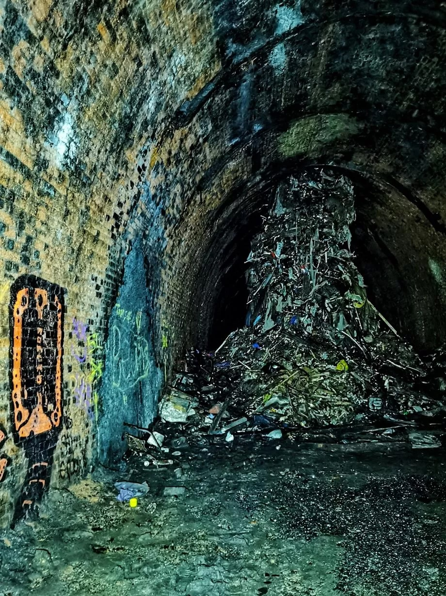

The Goat that Makes You Old - Rescued?
Aelfir cruelty on brazen display
 Last week, on an expedition into the remains scattered across the wastelands, a scavenger discovered something truly fascinating - a glass case, inside of which lay a goat, still clinging onto life, its body severely damaged in what looks like a piece of aelfir "art".
Luckily, using healing magic from the priests at the Cathedral, and the discovery that this goat may be immortal, the goat was nursed back to health - and, as it turns out, its blood has an aging effect on anyone or anything it touches! This is the near-mythical "Goat that Makes you Old", that we here in the Rumour Mill, back when we worked at the Silver Quarterly, reported on years ago before the cataclysm hit! It appears that this goat had been used as an art piece in the palace of some wealthy aelfir in what was once Amaranth.
Keep an eye out in the coming days - there are more mythical goats that may still be proven to exist!
Last week, on an expedition into the remains scattered across the wastelands, a scavenger discovered something truly fascinating - a glass case, inside of which lay a goat, still clinging onto life, its body severely damaged in what looks like a piece of aelfir "art".
Luckily, using healing magic from the priests at the Cathedral, and the discovery that this goat may be immortal, the goat was nursed back to health - and, as it turns out, its blood has an aging effect on anyone or anything it touches! This is the near-mythical "Goat that Makes you Old", that we here in the Rumour Mill, back when we worked at the Silver Quarterly, reported on years ago before the cataclysm hit! It appears that this goat had been used as an art piece in the palace of some wealthy aelfir in what was once Amaranth.
Keep an eye out in the coming days - there are more mythical goats that may still be proven to exist!
Angel of Death Sighting in Derelictus
Who are they?
Earlier this week, there was another sighting of the figure that locals have taken to calling "The Angel of Death". This figure, likely either aelfir or drow, is identifiable by their black cloak. Patterns to their appearance have not been identified, but when they make an appearance, a high-profile individual, usually aelfir, is found dead the next day. Interestingly, multiple times, the victim has been in a locked room, with no windows or entry points, and were found dead in their room the next morning with no visible entry points. If you have any evidence towards this, please contact us - send a letter by corvid to Downspire Quarterly, Ivory Row.
The Vermissian - An Autopsy
And... What is the Vault?
A hundred years ago, in an act of unprecedented - yet entirely expected - stupidity, the aelfir Council decided that they wanted to build a train network, spanning the entire Spire, using barely-understood prokatakos technology. What followed was decades of lobbying from existing railway barons, underpaid and overworked drow, and entirely too ambitious human retroengineers, which all came together in disaster. The Vermissian, as it was called, was carved into the flesh of Spire itself, stations were built, trains were assembled, and in the end, only one train ever ran on the network before it was unceremoniously shuttered weeks before it was scheduled to open. Rumour has it, however, that there's a deeper reason it never opened. There are stories that tell of the miners breaking the skin of the Heart, allowing it to flood through the tunnels. There are stories of a single train left on the tracks, running forever, powered by thoughts, prayers, belief and blood. There are stories of unknowable horrors stalking the tunnels, waiting to flay the skin from any unwary traveller not under the protection of a guide. None of these stories are provable, but their existence alone is enough to scare away all but the most daring and dedicated of explorers. As for the Vault, well... The Vault is supposedly a collection of knowledge from the Drow homelands. The Vault is not open to visitors, and only the most dedicated of drow knowledgekeepers are allowed access - and even then, only the smallest of their numbers are able to access the real archives of knowledge buried there. The Vault is subject to a mountain of theories - despite being lesser known than the Vermissian itself - and, of course, nobody who knows of it will ever speak on this, so in the end, all we have is theories. Some say that the archives of the Drow homeland, kept safe from Aelfir oppression, and yet others seem to believe that The Vault itself is a work of fiction, written by the aelfir to make the drow seem more conniving, giving them more license to oppress us. Whatever the reality may be, we will likely never learn the truth. Maybe that's for the better. Maybe the knowledge buried in there would break our minds if discovered, and maybe it would be best if we simply stop looking for it. And, as always, thanks for reading.